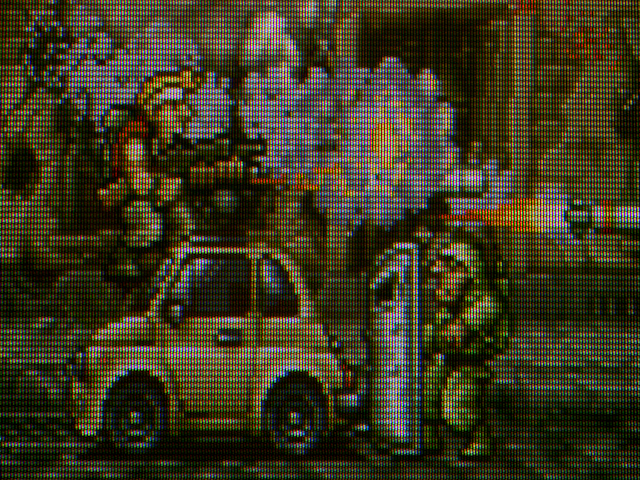

20150416 - Pixel Art and Slot Mask Pitch
This and the prior post are all shots from the same late model Arcade CRT, a 29" SVGA Makvision which can scan 30-40KHz and 47-90Hz. I'm cheating somewhat in taking a Metal Slug screen shot and displaying it on a non-15KHz monitor. Metal Slug was roughly 304x224 if I'm remembering right, so ultra low resolution to enable a 60Hz scan-out on CGA CRTs.
Arcade titles over the years with CRTs had a range of monitors and resolutions. Displays would provide a different look depending on the Slot Mask Pitch (effectively the number of dots for a given scanline).
In this next shot I'm driving the monitor near it's lowest resolution (at roughly 312 lines), then using H-size and V-size control to enlarge the screen shot as much as possible (showing maybe 250 lines on a 600 line display, so higher slots/line count than the Metal Slug titles). The 29" Makvision is a flat screen and thus suffers from moire patterns more than a curved display. In order to get the classic scan-line look (which is caused by scanning only half the display's lines to get double the frame rate), this shot has the moire reduction turned off (which keeps the beam from having vertical line jitter, which would otherwise cause lines to blend together).

Alternatively I can drive this monitor at 800x600 and then set the moire reduction to blend scan lines. This is to simulate various Arcade games which displayed a relatively higher resolution compared the display slot mask pitch (lower slots/line count, the other extreme). The prior post's image was somewhere in-between these two examples.